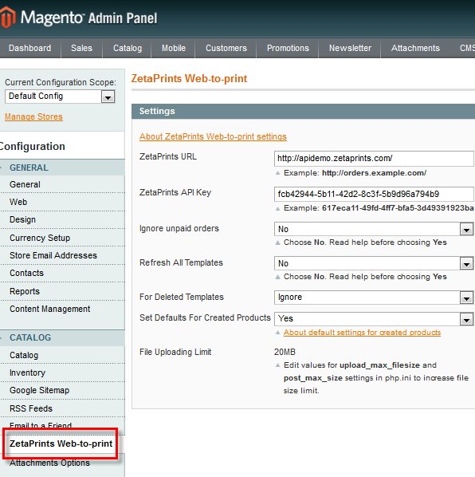
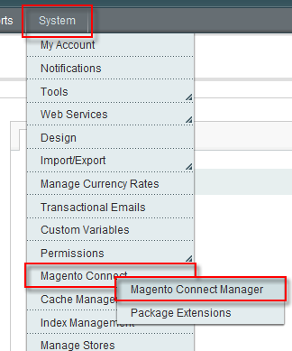
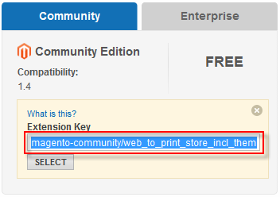
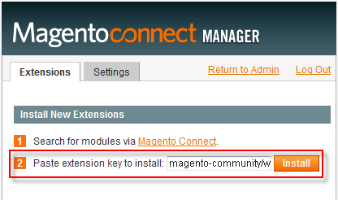

<?xml version="1.0" encoding="UTF-8"?><rss version="2.0"
	xmlns:content="http://purl.org/rss/1.0/modules/content/"
	xmlns:wfw="http://wellformedweb.org/CommentAPI/"
	xmlns:dc="http://purl.org/dc/elements/1.1/"
	xmlns:atom="http://www.w3.org/2005/Atom"
	xmlns:sy="http://purl.org/rss/1.0/modules/syndication/"
	xmlns:slash="http://purl.org/rss/1.0/modules/slash/"
	>

<channel>
	<title>web-to-print extension &#8211; Magento web-to-print &amp; dynamic imaging</title>
	<atom:link href="http://www.zetaprints.com/magentohelp/tag/web-to-print-extension/feed/" rel="self" type="application/rss+xml" />
	<link>http://www.zetaprints.com/magentohelp</link>
	<description>Just another WordPress site</description>
	<lastBuildDate>Fri, 07 Jun 2013 06:55:21 +0000</lastBuildDate>
	<language>en-US</language>
	<sy:updatePeriod>hourly</sy:updatePeriod>
	<sy:updateFrequency>1</sy:updateFrequency>
	<generator>https://wordpress.org/?v=4.4.1</generator>
	<item>
		<title>08. Create products</title>
		<link>http://www.zetaprints.com/magentohelp/create-simple-web-to-print-products/</link>
		<pubDate>Fri, 04 Dec 2009 10:02:12 +0000</pubDate>
		<dc:creator><![CDATA[admin]]></dc:creator>
				<category><![CDATA[Web-to-print installation]]></category>
		<category><![CDATA[Configuration]]></category>
		<category><![CDATA[web-to-print extension]]></category>

		<guid isPermaLink="false">/help/?p=8279</guid>
		<description><![CDATA[Step 7 Step 8 &#8211; Create products Step 9 Once the web-to-print templates are imported into the Magento database you can create simple or virtual products for them. Only templates that have no matching products are used to create new web-to-print products. Simple products vs. virtual products Products can be generated automatically by our web-to-print [&#8230;]]]></description>
				<content:encoded><![CDATA[<table class="m_install_nav">
<tbody>
<tr>
<td class="m_install_prev"><a title="Step 7 - Import templates" href="../../../import-web-to-print-data/" target="_self">Step 7</a></td>
<td class="m_install_cur"><strong>Step 8</strong> &#8211; Create products</td>
<td class="m_install_next"><a title="Step 9 - Register a master account" href="../../../register-a-master-account/" target="_self">Step 9</a></td>
</tr>
</tbody>
</table>
<p>Once the web-to-print templates are imported into the Magento database you can create simple or virtual products for them. Only templates that have no matching products are used to create new web-to-print products.</p>
<h3><span id="more-8279"></span></h3>
<h3>Simple products vs. virtual products</h3>
<p>Products can be generated automatically by our <a title="Magento web-to-print extension page" href="https://www.magentocommerce.com/magento-connect/web-to-print-and-dynamic-imaging.html" target="_self">web-to-print extension</a> from the imported templates. One product is generated per template.</p>
<ul>
<li><strong>Simple products</strong> &#8211; are the most common type of products. They are physically sold and delivered. Ex.: Your customers personalize and order 100 copies of a brochure to be shipped to their address.</li>
<li><strong>Virtual products</strong> &#8211; are products that are not sold physically. They do not need to be shipped or delivered in any way. Ex.: Your customers download and print themselves.</li>
</ul>
<p>Only simple and virtual products can be auto-generated in this way. You need to <a title="Linking web-to-print templates to products" href="../../../linking-magento-products-to-web-to-print-templates/">manually assign web-to-print templates</a> to products of other types.</p>
<h3>ZetaPrints products creation profile</h3>
<p>These advanced profiles are automatically created when the extension is installed. Navigate to <em>System &gt; Import/Export &gt; Dataflow &#8211; Advance Profiles</em><em></em><em></em><em>.</em></p>
<ul>
<li><strong>Names:</strong> <em>ZetaPrints virtual products creation</em> and <em>ZetaPrints simple products creation</em></li>
<li><strong>Action XML:</strong> you should see the following XML code in the <em>Actions XML</em> field of the profile:</li>
</ul>
<div class="codecolorer-container xml mac-classic" style="overflow:auto;white-space:nowrap;border:1px solid #9F9F9F;width:435px;"><table cellspacing="0" cellpadding="0"><tbody><tr><td style="padding:5px;text-align:center;color:#888888;background-color:#EEEEEE;border-right: 1px solid #9F9F9F;font: normal 12px/1.4em Monaco, Lucida Console, monospace;"><div>1<br /></div></td><td><div class="xml codecolorer" style="padding:5px;font:normal 12px/1.4em Monaco, Lucida Console, monospace;white-space:nowrap"><span style="color: #009900;"><span style="color: #000000; font-weight: bold;">&lt;action</span> <span style="color: #000066;">type</span>=<span style="color: #ff0000;">&quot;webtoprint/products-creation&quot;</span> <span style="color: #000066;">method</span>=<span style="color: #ff0000;">&quot;map&quot;</span> <span style="color: #000066;">product-type</span>=<span style="color: #ff0000;">&quot;virtual&quot;</span> <span style="color: #000000; font-weight: bold;">/&gt;</span></span></div></td></tr></tbody></table></div>
<p>or</p>
<div class="codecolorer-container xml mac-classic" style="overflow:auto;white-space:nowrap;border:1px solid #9F9F9F;width:435px;"><table cellspacing="0" cellpadding="0"><tbody><tr><td style="padding:5px;text-align:center;color:#888888;background-color:#EEEEEE;border-right: 1px solid #9F9F9F;font: normal 12px/1.4em Monaco, Lucida Console, monospace;"><div>1<br /></div></td><td><div class="xml codecolorer" style="padding:5px;font:normal 12px/1.4em Monaco, Lucida Console, monospace;white-space:nowrap"><span style="color: #009900;"><span style="color: #000000; font-weight: bold;">&lt;action</span> <span style="color: #000066;">type</span>=<span style="color: #ff0000;">&quot;webtoprint/products-creation&quot;</span> <span style="color: #000066;">method</span>=<span style="color: #ff0000;">&quot;map&quot;</span> <span style="color: #000066;">product-type</span>=<span style="color: #ff0000;">&quot;simple&quot;</span> <span style="color: #000000; font-weight: bold;">/&gt;</span></span></div></td></tr></tbody></table></div>
<h3>Run products creation profile</h3>
<p>Navigate to <em>System &gt; Import/Export &gt; Dataflow &#8211; Advance Profiles</em>. Select <em>ZetaPrints simple products creation</em> profile and click on <em>Run Profile</em> tab on the left. Click <em>Run Profile in Popup</em> button. It will initiate a process which may take several minutes.</p>
<p>Learn how to populate your Magento store with a <a title="Simple and virtual web-to-print products" href="../../../create-simple-and-virtual-web-to-print-products/" target="_self">combination of simple and virtual</a> products.</p>
<p><strong>Note.</strong> Newly created web-to-print products are not usable after the import and have to be <a title="Web-to-print Magento product configuration" href="../../../configure-product-attributes/" target="_self">configured manually</a>.</p>
]]></content:encoded>
			</item>
		<item>
		<title>07. Import data</title>
		<link>http://www.zetaprints.com/magentohelp/import-web-to-print-data/</link>
		<pubDate>Tue, 06 Oct 2009 16:34:02 +0000</pubDate>
		<dc:creator><![CDATA[admin]]></dc:creator>
				<category><![CDATA[Web-to-print installation]]></category>
		<category><![CDATA[Configuration]]></category>
		<category><![CDATA[web-to-print extension]]></category>

		<guid isPermaLink="false">/help/?p=7866</guid>
		<description><![CDATA[Step 6 Step 7 &#8211; Import templates Step 8 Once the web-to-print extension is installed and configured you can import the data from the ZetaPrints portal. All catalogs and templates are imported initially. Only new and updated templates are imported on subsequent runs. Data import needs to be initiated manually. ZetaPrints templates synchronization profile This [&#8230;]]]></description>
				<content:encoded><![CDATA[<table class="m_install_nav">
<tbody>
<tr>
<td class="m_install_prev"><a title="Step 6 - Configure settings" href="../../../zetaprints-synchronization-settings/" target="_self">Step 6</a></td>
<td class="m_install_cur"><strong>Step 7</strong> &#8211; Import templates</td>
<td class="m_install_next"><a title="Step 8 - Create products" href="../../../create-simple-web-to-print-products/" target="_self">Step 8</a></td>
</tr>
</tbody>
</table>
<p>Once the web-to-print extension is installed and configured you can import the data from the ZetaPrints portal. All catalogs and templates are imported initially. Only new and updated templates are imported on subsequent runs. Data import needs to be initiated manually.<span id="more-7866"></span></p>
<h3>ZetaPrints templates synchronization profile</h3>
<p>This advanced profile is automatically created when the extension is installed. Navigate to <em>System &gt; Import/Export &gt; Dataflow &#8211; Advance Profiles</em><em>.</em></p>
<ul>
<li><strong>Name:</strong> ZetaPrints templates synchronization</li>
<li><strong>Action XML:</strong> you should see the following XML code in the <em>Actions XML</em> field of the profile:</li>
</ul>
<div class="codecolorer-container xml mac-classic" style="overflow:auto;white-space:nowrap;border:1px solid #9F9F9F;width:435px;"><table cellspacing="0" cellpadding="0"><tbody><tr><td style="padding:5px;text-align:center;color:#888888;background-color:#EEEEEE;border-right: 1px solid #9F9F9F;font: normal 12px/1.4em Monaco, Lucida Console, monospace;"><div>1<br />2<br /></div></td><td><div class="xml codecolorer" style="padding:5px;font:normal 12px/1.4em Monaco, Lucida Console, monospace;white-space:nowrap"><span style="color: #009900;"><span style="color: #000000; font-weight: bold;">&lt;action</span> <span style="color: #000066;">type</span>=<span style="color: #ff0000;">&quot;webtoprint/templates-synchronization&quot;</span> <span style="color: #000066;">method</span>=<span style="color: #ff0000;">&quot;parse&quot;</span> <span style="color: #000000; font-weight: bold;">/&gt;</span></span><br />
<span style="color: #009900;"><span style="color: #000000; font-weight: bold;">&lt;action</span> <span style="color: #000066;">type</span>=<span style="color: #ff0000;">&quot;webtoprint/products-updating&quot;</span> <span style="color: #000066;">method</span>=<span style="color: #ff0000;">&quot;map&quot;</span> <span style="color: #000000; font-weight: bold;">/&gt;</span></span></div></td></tr></tbody></table></div>
<h3>Configure data import</h3>
<p>Unless you&#8217;re using the demo ZetaPrints account to try the extension, you need to provide your own unique <a title="How to get API key" href="../../../../help/how-to-get-api-key/" target="_self">ZetaPrints API Key</a> and <a title="Web-to-print access URL" href="../../../../help/category/access-url/" target="_self">URL of your web-to-print portal</a> as explained in Step 6 &#8211; <a title="ZetaPrints extension synchronization with Magento" href="../../../zetaprints-synchronization-settings/" target="_self">Configure settings</a>.</p>
<h3>Run data import</h3>
<p>Navigate to <em>System &gt; Import/Export &gt; </em><em>Dataflow &#8211; Advance Profiles</em>. Select <em>ZetaPrints templates synchronization</em> profile and click on <em>Run Profile</em> tab on the left. Click <em>Run Profile in Popup</em> button. It will initiate a data importing process which may take several minutes.</p>
<p>Re-run the <em>ZetaPrints templates synchronization</em> the same way every time you add new templates or change existing ones in ZetaPrints. Templates with no variable fields will be ignored.</p>
<p><strong>Note.</strong> Prices and options are not imported by running data import. You&#8217;ll need to set them manually in Step 11 &#8211; <a title="Configure Magento product attributes" href="../../../configure-product-attributes/" target="_self">Configure attributes</a>.</p>
<h3>Deleted templates</h3>
<p>By default, the data import does not delete corresponding products from Magento even if they were removed from ZetaPrints. You need to chose an option in the ZetaPrints Web-to-print settings page to set the preferred action for deleted templates.</p>
<h3>Setting your outside server IP address</h3>
<p>You need to set outside server ip address only when you are planning to use Magento personalization form and this ip address doesn’t match your server address.</p>
<p>This can happen in several situations, for example, your server is behind a NAT.</p>
<p>In such situation you need to hardcode outside server ip address in <strong>&lt;your_magento_installation&gt;/app/code/local/ZetaPrints/Zpapi/Model/zp_api.php</strong> file. Open this file, find following lines (it’s somewhere at the end of the file):</p>
<div class="codecolorer-container php mac-classic" style="overflow:auto;white-space:nowrap;border:1px solid #9F9F9F;width:435px;"><table cellspacing="0" cellpadding="0"><tbody><tr><td style="padding:5px;text-align:center;color:#888888;background-color:#EEEEEE;border-right: 1px solid #9F9F9F;font: normal 12px/1.4em Monaco, Lucida Console, monospace;"><div>1<br />2<br />3<br /></div></td><td><div class="php codecolorer" style="padding:5px;font:normal 12px/1.4em Monaco, Lucida Console, monospace;white-space:nowrap"><span style="color: #666666; font-style: italic;">//Enter here your outside ip address</span><br />
<span style="color: #666666; font-style: italic;">//if it’s not matching your machine address</span><br />
<span style="color: #666666; font-style: italic;">//$ip = ‘a.b.c.d’;</span></div></td></tr></tbody></table></div>
<p>Uncomment third line and replace a.b.c.d with external server ip address.</p>
<p>For example:</p>
<div class="codecolorer-container php mac-classic" style="overflow:auto;white-space:nowrap;border:1px solid #9F9F9F;width:435px;"><table cellspacing="0" cellpadding="0"><tbody><tr><td style="padding:5px;text-align:center;color:#888888;background-color:#EEEEEE;border-right: 1px solid #9F9F9F;font: normal 12px/1.4em Monaco, Lucida Console, monospace;"><div>1<br />2<br />3<br /></div></td><td><div class="php codecolorer" style="padding:5px;font:normal 12px/1.4em Monaco, Lucida Console, monospace;white-space:nowrap"><span style="color: #666666; font-style: italic;">//Enter your external ip address here</span><br />
<span style="color: #666666; font-style: italic;">//if it doesn’t match your server address</span><br />
<span style="color: #000088;">$ip</span> <span style="color: #339933;">=</span> ‘87<span style="color: #339933;">.</span>110<span style="color: #339933;">.</span>2<span style="color: #339933;">.</span>45?<span style="color: #339933;">;</span></div></td></tr></tbody></table></div>
<table class="m_install_nav">
<tbody>
<tr>
<td class="m_install_prev"><a title="Step 6 - Configure settings" href="../../../zetaprints-synchronization-settings/" target="_self">Step 6</a></td>
<td class="m_install_cur"><strong>Step 7</strong> &#8211; Import templates</td>
<td class="m_install_next"><a title="Step 8 - Create products" href="../../../create-simple-web-to-print-products/" target="_self">Step 8</a></td>
</tr>
</tbody>
</table>
]]></content:encoded>
			</item>
		<item>
		<title>06. ZetaPrints synchronization settings</title>
		<link>http://www.zetaprints.com/magentohelp/zetaprints-synchronization-settings/</link>
		<pubDate>Tue, 06 Oct 2009 15:12:37 +0000</pubDate>
		<dc:creator><![CDATA[admin]]></dc:creator>
				<category><![CDATA[Web-to-print installation]]></category>
		<category><![CDATA[Configuration]]></category>
		<category><![CDATA[web-to-print extension]]></category>

		<guid isPermaLink="false">/help/?p=7847</guid>
		<description><![CDATA[Step 5 Step 6 &#8211; Configure settings Step 7 Your Magento store needs to be synchronized with a ZetaPrints web-to-print portal so that templates can be imported. Log in to Magento as a store administrator, navigate to System/Configuration in the top menu and click on ZetaPrints Web-to-print tab in the menu on the left. ZetaPrints [&#8230;]]]></description>
				<content:encoded><![CDATA[<table class="m_install_nav">
<tbody>
<tr>
<td class="m_install_prev"><a title="Step 5 - Clear Magento cache" href="../../../clear-magento-cache/">Step 5</a></td>
<td class="m_install_cur"><strong>Step 6</strong> &#8211; Configure settings</td>
<td class="m_install_next"><a title="Step 7 - Import data" href="../../../import-web-to-print-data/">Step 7</a></td>
</tr>
</tbody>
</table>
<p>Your Magento store needs to be synchronized with a ZetaPrints web-to-print portal so that templates can be imported.</p>
<p>Log in to Magento as a store administrator, navigate to <em>System/Configuration</em> in the top menu and click on <em>ZetaPrints Web-to-print</em> tab in the menu on the left.<span id="more-7847"></span></p>
<p></p>
<h2>ZetaPrints demo account</h2>
<p><strong></strong>Our <a title="Magento web-to-print extension page" href="https://www.magentocommerce.com/magento-connect/web-to-print-and-dynamic-imaging.html">web-to-print extension</a> is setup to work out of the box with a <strong>demo</strong> ZetaPrints account. When you&#8217;re installing the extension for the first time, the <em>ZetaPrints URL</em> and <em>API key</em> fields are populated with the following demo account values:</p>
<ul>
<li>ZetaPrints URL: <em>http://apidemo.zetaprints.com/</em></li>
<li>ZetaPrints API key: <em>fcb42944-5b11-42d2-8c3f-5b9d96a794b9</em></li>
</ul>
<p>This enables you to populate your store with templates and try the extension before setting up your own web-to-print portal.</p>
<p>Installation <a title="Register a master web-to-print account" href="../../../register-a-master-account/">Step 9</a> and <a title="Set up a subdomain" href="../../../set-up-your-domain/">Step 10</a> contain instructions about registering a master account and setting up a custom domain which is required when you&#8217;re ready to move on and populate the store with your own templates.</p>
<h2>ZetaPrints URL</h2>
<p><a title="Web-to-print custom access URL" href="../../../../help/custom-access-url/" target="_self">URL</a> to the home page of your ZetaPrints web-to-print portal, e.g. <em>http://orders.example.com</em></p>
<p>Do not include any page names. Must have <em>http://</em> part in it.</p>
<h2>ZetaPrints API Key</h2>
<p>This is a key that allows access to your data via ZetaPrints <a title="Web-to-print API" href="../../../../help/category/api/" target="_self">API</a>. Go to your ZetaPrints portal, log in and navigate to <a title="About web-to-print API" href="../../../../help/about-web-to-print-api/" target="_self">API</a> page. <a title="How to get API key" href="../../../../help/how-to-get-api-key/" target="_self">Grab the key</a> from there.</p>
<p>Keep the key secret. It is the same as your login and password.</p>
<h2>Refresh All</h2>
<p><strong>Set this parameter to No.</strong> It will update only templates that have changed since the last time.</p>
<p>Setting it to <em>Yes</em> will instruct the sync to download all templates. It is a bit dangerous because:</p>
<ul>
<li>your ZetaPrints account may be blocked automatically if you do it too often</li>
<li>your Magento hosting may be suspended if you take too many resources for too long on a shared computer</li>
<li>the process may time out if there are too many templates to import</li>
</ul>
<h2>Deleted templates</h2>
<p>By default, this option is set to <em>Ignore</em> and running the <em>ZetaPrints templates synchronization</em> profile does not affect products in Magento even if they were removed from ZetaPrints. You can chose one of the available options depending on how you want the deleted templates to be processed when you run the <em>ZetaPrints templates synchronization</em> profile.</p>
<ul>
<li><strong>Ignore</strong> &#8211; deleted templates will be ignored and their corresponding products will be left as is. Users will not be able to use the product for web-to-print or dynamic imaging, but will see it in the catalog.</li>
<li><strong>Delete products</strong> &#8211; the products associated with the deleted template will be completely deleted from your store.</li>
<li><strong>Move to category</strong> &#8211; the products associated with the deleted template will be moved to the category you choose.</li>
</ul>
<h2>Set Defaults for created products</h2>
<p>Products can be <a title="Create simple and virtual web-to-print Magento products" href="../../../create-simple-web-to-print-products/">created automatically</a> for imported templates. This is where you set the system to use default values for required product attributes so that the product appears in the front-end of the store right after it was created.</p>
<table class="m_install_nav">
<tbody>
<tr>
<td class="m_install_prev"><a title="Step 5 - Clear Magento cache" href="../../../clear-magento-cache/">Step 5</a></td>
<td class="m_install_cur"><strong>Step 6</strong> &#8211; Configure settings</td>
<td class="m_install_next"><a title="Step 7 - Import data" href="../../../import-web-to-print-data/">Step 7</a></td>
</tr>
</tbody>
</table>
]]></content:encoded>
			</item>
		<item>
		<title>03. Install web-to-print extension</title>
		<link>http://www.zetaprints.com/magentohelp/web-to-print-magento-install/</link>
		<pubDate>Tue, 06 Oct 2009 12:00:40 +0000</pubDate>
		<dc:creator><![CDATA[admin]]></dc:creator>
				<category><![CDATA[Web-to-print installation]]></category>
		<category><![CDATA[SVN]]></category>
		<category><![CDATA[web-to-print extension]]></category>

		<guid isPermaLink="false">/help/?p=7818</guid>
		<description><![CDATA[Step 2 Step 3 &#8211; Install web-to-print extension Step 4 Installing our web-to-print Magento extension in your Magento store is an automated process. Back up Your Magento set up may stop working after making changes and adding this extension. It’s a good idea to make a back up of the code, your current theme and [&#8230;]]]></description>
				<content:encoded><![CDATA[<table class="m_install_nav">
<tbody>
<tr>
<td class="m_install_prev"><a title="Step 2 - Install Magento" href="../../../install-magento/" target="_self">Step 2</a></td>
<td class="m_install_cur"><strong>Step 3</strong> &#8211; Install web-to-print extension</td>
<td class="m_install_next"><a title="Step 4 - Configure default theme" href="../../../theme-configuration/" target="_self">Step 4</a></td>
</tr>
</tbody>
</table>
<p>Installing our web-to-print Magento extension in your Magento store is an automated process.<span id="more-7818"></span></p>
<h2>Back up</h2>
<p>Your Magento set up may stop working after making changes and adding this extension. It’s a good idea to make a back up of the code, your current theme and the DB first. Back it up. Takes 5 mins – saves days.</p>
<p><strong>Note.</strong> You should disable Magento caching before installing the extension. The cache storage management page is located at <em>System / Cache Management</em> in Magento admin panel.</p>
<h2>Install extension</h2>
<div style="display: table;">
<p></p>
<div style="position: relative; top: 15px; display: inline; padding: 0 2px;">Login to your Magento administration panel and navigate to <em>System / Magento Connect / Magento Connect Manager</em>.</div>
<p>&nbsp;</p>
</div>
<div style="display: table;">
<p></p>
<div style="position: relative; top: 15px; display: inline;">Get the extension installation key from Magento&#8217;s <a title="Magento web-to-print extension page" href="https://www.magentocommerce.com/magento-connect/web-to-print-and-dynamic-imaging.html" target="_self">web-to-print extension</a> page.</div>
<p>&nbsp;</p>
</div>
<div style="display: table;">
<p></p>
<div style="position: relative; top: 15px; display: inline;">
<p>Paste the installation key in the corresponding field of <em>Magento Connect Manager</em> and hit <strong>Install</strong>.</p>
<h2>Known issue</h2>
<p>We recommend logging out of Magento admin and then logging back in again after a successful installation.<br />
You may not be able to access the configuration page without Magento re-evaluating your access credentials, which happens during a logon.</p>
</div>
<p>&nbsp;</p>
</div>
<table class="m_install_nav">
<tbody>
<tr>
<td class="m_install_prev"><a title="Step 2 - Install Magento" href="../../../install-magento/" target="_self">Step 2</a></td>
<td class="m_install_cur"><strong>Step 3</strong> &#8211; Install web-to-print extension</td>
<td class="m_install_next"><a title="Step 4 - Configure default theme" href="../../../theme-configuration/" target="_self">Step 4</a></td>
</tr>
</tbody>
</table>
]]></content:encoded>
			</item>
		<item>
		<title>01. Prerequisites</title>
		<link>http://www.zetaprints.com/magentohelp/web-to-print-extension-prerequisites/</link>
		<pubDate>Tue, 06 Oct 2009 11:52:58 +0000</pubDate>
		<dc:creator><![CDATA[admin]]></dc:creator>
				<category><![CDATA[Web-to-print installation]]></category>
		<category><![CDATA[Configuration]]></category>
		<category><![CDATA[web-to-print extension]]></category>

		<guid isPermaLink="false">/help/?p=7812</guid>
		<description><![CDATA[Step 1 &#8211; Check prerequisites Step 2 Lets make sure we have everything ready before proceeding with Magento installation. You need to make sure that your server is properly configured. Most servers will work out of the box. Some will need to be adjusted. URL File Access For data import from ZetaPrints into Magento you [&#8230;]]]></description>
				<content:encoded><![CDATA[<table class="m_install_nav">
<tbody>
<tr>
<td class="m_install_prev"></td>
<td class="m_install_cur"><strong>Step 1</strong> &#8211; Check prerequisites</td>
<td class="m_install_next"><a title="Step 2 - Install Magento" href="../../../install-magento/" target="_self">Step 2</a></td>
</tr>
</tbody>
</table>
<p>Lets make sure we have everything ready before proceeding with Magento installation. You need to make sure that your server is properly configured. Most servers will work out of the box. Some will need to be adjusted.<span id="more-7812"></span></p>
<h2>URL File Access</h2>
<p>For data import from ZetaPrints into Magento you need to either have <a title="cURL library" href="http://curl.haxx.se/" target="_self">cURL</a> library installed (most hosts have it) or alternatively make this change in php.ini</p>
<div class="codecolorer-container ini mac-classic" style="overflow:auto;white-space:nowrap;border:1px solid #9F9F9F;width:435px;"><table cellspacing="0" cellpadding="0"><tbody><tr><td style="padding:5px;text-align:center;color:#888888;background-color:#EEEEEE;border-right: 1px solid #9F9F9F;font: normal 12px/1.4em Monaco, Lucida Console, monospace;"><div>1<br /></div></td><td><div class="ini codecolorer" style="padding:5px;font:normal 12px/1.4em Monaco, Lucida Console, monospace;white-space:nowrap"><span style="color: #000099;">allow_url_fopen</span> <span style="color: #000066; font-weight:bold;">=</span><span style="color: #660066;"> On</span></div></td></tr></tbody></table></div>
<p><strong>Note:</strong> <em>allow_url_fopen = On</em> may be a security risk, so you&#8217;d better install cURL.</p>
<h2>XSL support</h2>
<p>Our Magento web-to-print <a title="Magento web-to-print and dynamic  imaging extension" href="https://www.magentocommerce.com/magento-connect/web-to-print-and-dynamic-imaging.html" target="_self">extension</a> requires XSL (XSLT) support. The presence of an XSL component is checked during the installation which can be aborted if the component is absent. Contact your system administrator or the hosting company to have it installed.</p>
]]></content:encoded>
			</item>
		<item>
		<title>Magento web-to-print overview</title>
		<link>http://www.zetaprints.com/magentohelp/magento-web-to-print-overview/</link>
		<pubDate>Tue, 06 Oct 2009 10:17:52 +0000</pubDate>
		<dc:creator><![CDATA[admin]]></dc:creator>
				<category><![CDATA[Overview]]></category>
		<category><![CDATA[Introduction]]></category>
		<category><![CDATA[web-to-print extension]]></category>

		<guid isPermaLink="false">/help/?p=7783</guid>
		<description><![CDATA[Magento web-to-print extension allows e-commerce operators build their online stores using an open source platform and utilize the power of ZetaPrints dynamic imaging and web-to-print back-end. About ZetaPrints ZetaPrints is an online personalization engine used for web-to-print and dynamic imaging. The system is based on user-uploaded templates built in vector-graphics applications. ZetaPrints has a set [&#8230;]]]></description>
				<content:encoded><![CDATA[<p>Magento web-to-print extension allows e-commerce operators build their online <a title="Web-to-print storefront" href="../../../../printers/web-to-print-storefront/" target="_self">stores</a> using an open source platform and utilize the power of ZetaPrints <a title="Dynamic imaging" href="../../../../category/dynamic-imaging/" target="_self">dynamic  imaging</a> and <a title="Web-to-print service" href="../../../../category/web-to-print-software/" target="_self">web-to-print</a> back-end. <span id="more-7783"></span></p>
<h2>About ZetaPrints</h2>
<p><a title="Web-to-print and Dynamic imaging" href="../../../../" target="_self">ZetaPrints</a> is an online personalization engine used for web-to-print and dynamic imaging. The system is based on user-uploaded <a title="Web-to-print templates" href="../../../../printers/web-to-print-templates/" target="_self">templates</a> built in vector-graphics applications. ZetaPrints has a set of <a title="Web-to-print API" href="../../../../help/category/api/" target="_self">API</a>s, but it is not extensible on its own as it is a fully hosted system. The API can be used to exchange data with ZetaPrints and consume its services from within other applications.</p>
<h2>About Magento</h2>
<p>Magento is an open source e-commerce platform <a title="Magento ecommerce platform" href="http://www.magentocommerce.com/" target="_self">www.magentocommerce.com</a>. It has plugins and extensions infrastructure. It&#8217;s main purpose is to build online stores. The default configuration is limited to public stores. There are extensions to control user access and implement stores with limited user access.</p>
<h2>Selling customized products</h2>
<p class="flash">Watch a <a href="../../../wp-content/magento_demo/magento_demo.html" target="_blank">Flash demonstration</a> on this topic</p>
<p>Magento is geared up to selling finished products. A user would normally browse the catalog, add products to cart, pay, download or have them delivered. Selling template-based products requires one more step &#8211; personalization. Personalization is done by ZetaPrints using native Magento interface.</p>
<p>Once the design is customized the control is passed back to Magento along with necessary IDs to complete the order and obtain the files. The user never leaves the Magento store and is unaware that some services were provided by ZetaPrints.</p>
]]></content:encoded>
			</item>
	</channel>
</rss>

<!-- Localized -->